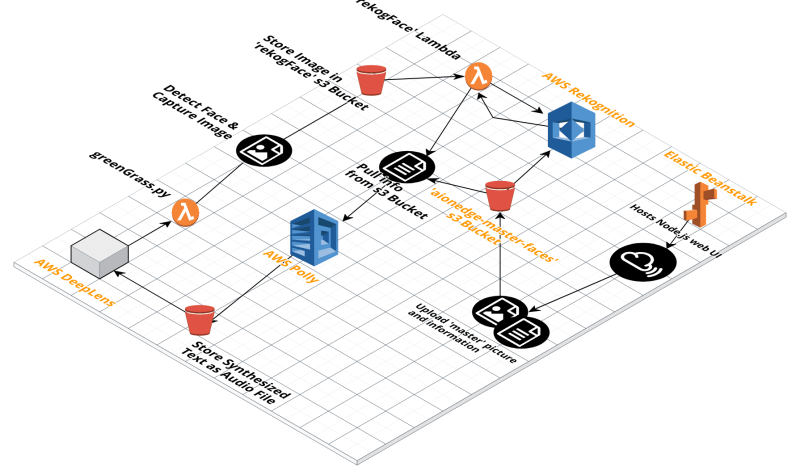

Deeplens Challenge, Feb 2018
Deeplens Family Assistant
Team AI Underdogs
Overview
When thinking of ideas for the DeepLens challenge, we quickly decided that we wanted to create something that could help people in need. We wanted to use Technology to bring people together. After considering many applications of the device, we recognized that the ability to recognize faces would be invaluable in helping those who had difficulty recognizing other people. Individuals diagnosed with Dementia (patients) have difficulty recognizing friends and even family, which can cause them to become disoriented and confused when speaking with loved ones.
Patients suffering from memory-loss can use our application to help them remember their loved ones. The DeepLens camera configured with our application can be carried around. It will recognize family members and friends in view of the camera and audio play their name with brief bio. This will aid and help connect the dots for those with memory-loss. Information about family and friends is pre-configured and uploaded in a data store.
The DeepLens camera and application can also be used by patients at home for memory exercises. Studies show that memory exercises can slow the loss of memory.
Video - https://www.youtube.com/watch?v=XMIhV_deJ8U&t=21s
Architecture
This project uses DeepLens and AWS services to help people with dementia or suffering from memory loss. It uses the DeepLens’s deep learning video camera to make inferences. The inferences are fed to several AWS services like Rekognition, Polly integrated using Lambda and S3 services, as shown in the flow diagram below.

Code
Lambdas
- Deeplens-face-detection - is the default face detection provided with DeepLens. greengrassHelloWorld.py is modified to upload captured frames to rekog-face S3 bucket. Another lambda function recogFace is auto triggered on upload of image to this S3 bucket.
This function also plays the audio that is uploaded from the audio-rekog-face S3 bucket. It deletes the audio file from the bucket once played out.
- recogFace - triggered when an image is uploaded to rekog-face S3 bucket. This connects to AWS Rekognition to recognize the face, retrieve information associated, synthesize to audio using AWS Polly and drop the audio in the audio-rekog-face S3 bucket.
S3 Buckets
- aionedge-master-faces - this is the master S3 bucket that stores the pictures and bio information
- rekog-face - stores the picture frames captured by device, recogFace lambda function is auto triggered when an image is uploaded to this bucket
- audio-rekog-face - stores the audio of the person name and information, is read by the Deeplens-face-detection lambda function to play the audio on the device
UI
Run
Setup
- Use UI to upload photos of family and friends to be recognized
- Add a front shot with a brief description that can help remind and make connection for the patient
Use Case 1 - Recognize Family & Friends
- Turn on the DeepLens camera
- Person to be recognized comes in view of the camera
- DeepLens automatically detects using the default face detection ML model. Using various AWS services, the face is matched with photos uploaded.
- If the face matches then the name of person along with description is converted to audio format. This audio is then accessed and played by the DeepLens device.
Use Case 2 - Memory Exercise
- Turn on the DeepLens camera
- Point picture of person stored on the smart phone to the camera
- DeepLens automatically detects using the default face detection ML model. Using various AWS services, the face is matched with photos uploaded.
- If the face matches then the name of person along with description is converted to audio format. This audio is then accessed and played by the DeepLens device.